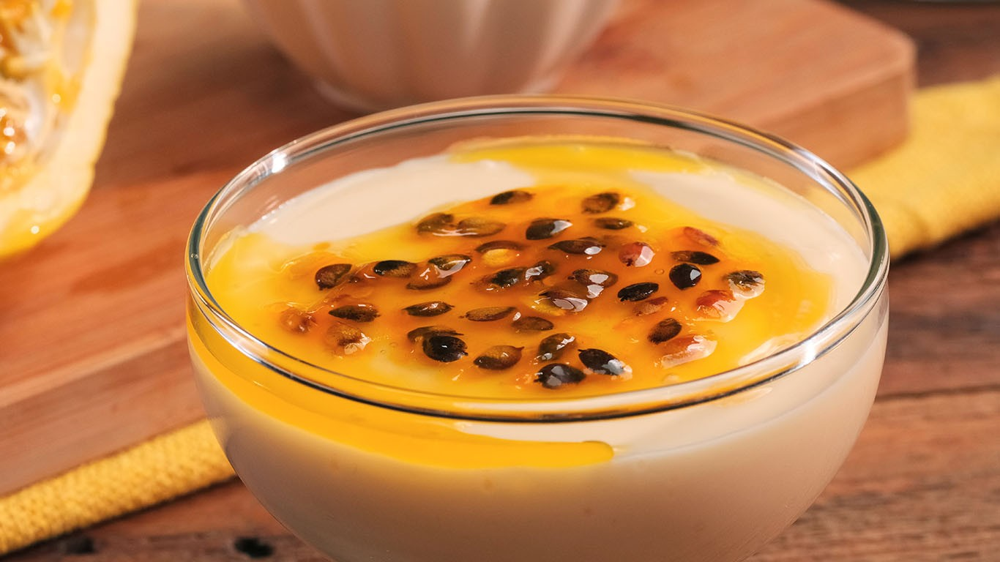

Musse de Maracujá
WebLab - 2025/1
Uma sobremesa deliciosa e fácil de fazer.
Ingredientes
- 1 lata de leite condensado
- 1 lata de creme de leite
- 1 lata de suco de maracujá concentrado
- 1/2 xícara de H20
Modo de Preparo
- Em um liquidificador, bata o leite condensado, o creme de leite e o suco de maracujá até obter uma
mistura homogênea - Se estiver muito densa, adicione mais água e bata por mais alguns segundos.
- Despeje a musse em taças individuais e leve à geladeira por cerca de 4 horas ou até que esteja firme.
- Sirva gelado e bom apetite!
Receita muito boa, eu recomendo.
- Prof. Pablo Leon Rodrigues